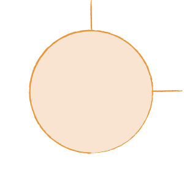
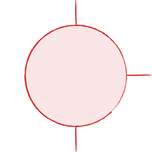

Study the concept maps and explanations by selecting each of the buttons.
The concept of law
1. Definitions
4. Civil law
2. Legal or
non-legal rule
3. Criminal law
The common law system
1. Historical background
7. Persuasive
precedent
2. Precedent
3. Ratio decidendi
4. Obiter dictum
5. Court hierarchy
6. Binding precedent
Dispute resolution
1. Litigation - court hierarchy

2. Alternative
dispute resolution
Statute law
1. Federation

2. Constitution
a. Powers
b. Alteration
3. Parliament